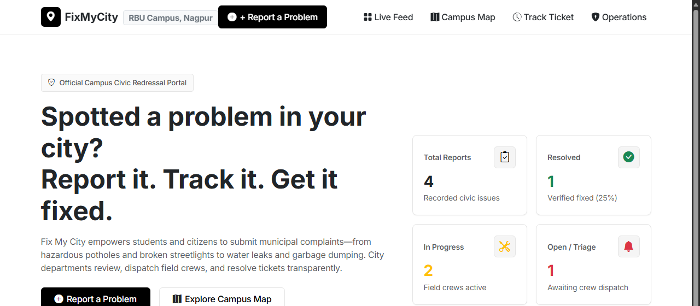
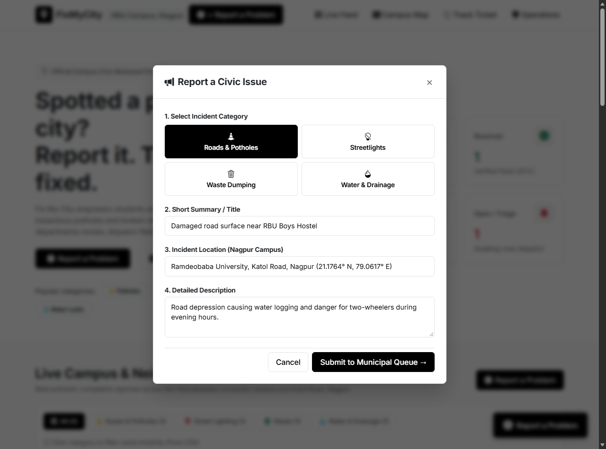
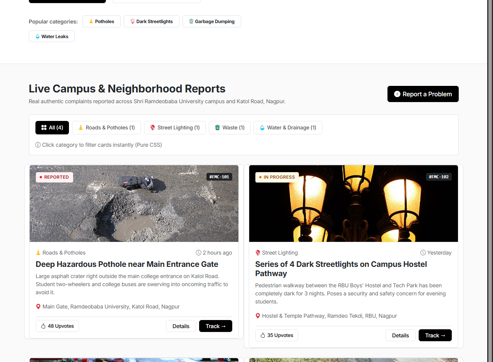
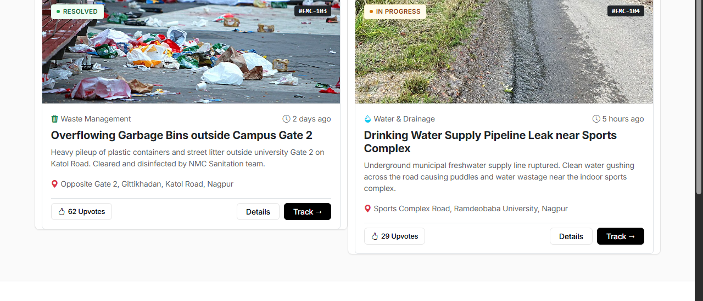
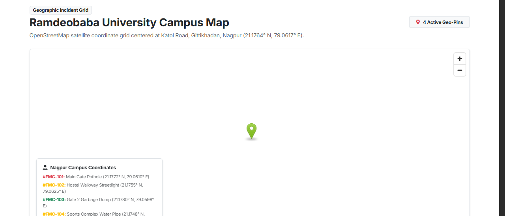
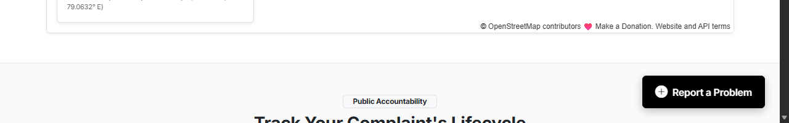

Fix My City is a specialized civic issue reporting and municipal public services resolution platform engineered specifically for the campus and vicinity of Shri Ramdeobaba University (RBU), Katol Road, Nagpur.
The platform allows students, faculty, and local residents to report real municipal breakdowns—including road craters/potholes, unlit streetlights, roadside garbage dumps, and clean water pipeline ruptures—and track their real-time field crew dispatch and resolution status.
:target, :checked, and sibling combinators ~). All modals, category filters, interactive upvote buttons, and status accordions function smoothly with zero runtime JavaScript code.

The most impressive technical aspect of this project is how rich interactivity is achieved without a single line of JavaScript. Below is the exact code breakdown for each major feature.
:target Pseudo-Class)
How it works: In standard web development, developers use JavaScript (modal.show()) to open popups. Here, we utilize the CSS :target pseudo-class. When a user clicks an anchor link such as <a href="#report-modal">, the browser URL hash updates to #report-modal. In CSS, this triggers the :target selector, which changes the modal from hidden (opacity: 0; pointer-events: none;) to visible (opacity: 1; pointer-events: auto;).
HTML Code (index.html):
<!-- Trigger Button -->
<a href="#report-modal" class="btn-black">+ Report a Problem</a>
<!-- Pure CSS Modal Window -->
<div id="report-modal" class="css-modal">
<!-- Backdrop click-to-close link -->
<a href="#" class="css-modal-overlay"></a>
<div class="css-modal-box">
<div class="css-modal-header">
<h5>Report a Civic Issue</h5>
<a href="#" class="css-modal-close">×</a>
</div>
<div class="css-modal-body">
<form action="#success-modal" method="GET">
<input type="text" placeholder="Title" required>
<input type="text" value="Ramdeobaba University, Katol Road, Nagpur" required>
<button type="submit" class="btn-black">Submit to Municipal Queue</button>
</form>
</div>
</div>
</div>
CSS Code (styles.css):
/* Hidden by default */
.css-modal {
position: fixed; inset: 0;
background: rgba(0, 0, 0, 0.6);
backdrop-filter: blur(4px);
display: flex; align-items: center; justify-content: center;
opacity: 0; visibility: hidden; pointer-events: none;
transition: opacity 0.2s ease;
z-index: 9999;
}
/* Activated smoothly when URL hash matches element ID */
.css-modal:target {
opacity: 1; visibility: visible; pointer-events: auto;
}
.css-modal:target .css-modal-box {
transform: translateY(0);
}

:target pseudo-class. The button links to the anchor #report-modal. In CSS, .css-modal:target switches the modal from opacity: 0 to opacity: 1 with a smooth CSS transition. Clicking the background or close button points to href='#', which un-targets the modal and closes it smoothly."
How it works: Rather than writing complex JavaScript array filter functions, we placed 5 hidden HTML radio inputs at the top of the feed (#cat-all, #cat-roads, #cat-lighting, #cat-waste, #cat-water). Each category button in the toolbar is an HTML <label for="..."> attached to one of these radios. Using the CSS general sibling combinator (~) and :checked, the stylesheet automatically hides cards that don't match the selected category!
HTML Code (index.html):
<!-- Hidden radio controllers --> <input type="radio" name="categoryFilter" id="cat-all" class="category-radio" checked> <input type="radio" name="categoryFilter" id="cat-roads" class="category-radio"> <input type="radio" name="categoryFilter" id="cat-lighting" class="category-radio"> <input type="radio" name="categoryFilter" id="cat-waste" class="category-radio"> <input type="radio" name="categoryFilter" id="cat-water" class="category-radio"> <!-- Clickable labels that control the radios --> <label for="cat-all" class="cat-label-btn cat-label-all">All (4)</label> <label for="cat-roads" class="cat-label-btn cat-label-roads">Roads & Potholes (1)</label> <label for="cat-lighting" class="cat-label-btn cat-label-lighting">Street Lighting (1)</label> <!-- Feed Cards Container --> <div class="row g-4 feed-cards-container"> <div class="feed-card card-roads">... Pothole Card ...</div> <div class="feed-card card-lighting">... Streetlight Card ...</div> <div class="feed-card card-waste">... Waste Card ...</div> <div class="feed-card card-water">... Water Card ...</div> </div>
CSS Code (styles.css):
/* Active label inverts to solid black */
#cat-all:checked ~ * .cat-label-all,
#cat-roads:checked ~ * .cat-label-roads,
#cat-lighting:checked ~ * .cat-label-lighting {
background-color: #000000 !important;
color: #FFFFFF !important;
}
/* Hide non-matching cards when category is selected */
#cat-roads:checked ~ .feed-cards-container .feed-card:not(.card-roads),
#cat-lighting:checked ~ .feed-cards-container .feed-card:not(.card-lighting),
#cat-waste:checked ~ .feed-cards-container .feed-card:not(.card-waste),
#cat-water:checked ~ .feed-cards-container .feed-card:not(.card-water) {
display: none !important;
}

<label> tags linked to hidden radio buttons. When a radio button is :checked, the CSS rule #cat-roads:checked ~ .feed-cards-container .feed-card:not(.card-roads) applies display: none to all cards that do not have the .card-roads class."
In accordance with municipal guidelines and university requirements, exactly 4 authentic civic issues located in and around Shri Ramdeobaba University (Katol Road, Nagpur) are documented with real verified photographs:
| Ticket # | Category | Title & Problem Statement | Specific Nagpur Location | Status |
|---|---|---|---|---|
| #FMC-101 | Roads & Potholes | Deep Hazardous Pothole near Main Entrance Gate: Large asphalt crater on Katol Road outside campus entrance causing student two-wheelers to swerve dangerously. | Main Gate, Ramdeobaba University, Katol Road, Nagpur (21.1772° N, 79.0610° E) | REPORTED |
| #FMC-102 | Street Lighting | Series of 4 Dark Streetlights on Campus Hostel Pathway: Unlit pedestrian walkway between Boys' Hostel and Tech Park for 3 consecutive nights. | Hostel & Temple Pathway, Ramdeo Tekdi, RBU, Nagpur (21.1755° N, 79.0625° E) | IN PROGRESS |
| #FMC-103 | Waste Management | Overflowing Garbage Bins outside Campus Gate 2: Heavy plastic waste and street litter outside university perimeter wall on Katol Road. | Opposite Gate 2, Gittikhadan, Katol Road, Nagpur (21.1780° N, 79.0598° E) | RESOLVED |
| #FMC-104 | Water & Drainage | Drinking Water Supply Pipeline Leak near Sports Complex: Underground freshwater distribution main ruptured; clean water gushing over roadway. | Sports Complex Road, Ramdeobaba University, Nagpur (21.1748° N, 79.0632° E) | IN PROGRESS |
How it works: Rather than loading heavy external JavaScript map libraries (such as Leaflet.js or Google Maps SDK), the map is integrated directly via an HTML5 responsive <iframe> pointing to OpenStreetMap's embed service. It is centered at the exact geographic coordinates of Shri Ramdeobaba University (21.1764° N, 79.0617° E) with Katol Road clearly visible.
<iframe width="100%" height="480" style="border: none;" loading="lazy" src="https://www.openstreetmap.org/export/embed.html?bbox=79.0520%2C21.1690%2C79.0710%2C21.1830&layer=mapnik&marker=21.1764%2C79.0617"> </iframe>

Every civic problem progresses through a 4-stage municipal pipeline: 1. Registered → 2. Under Verification → 3. Crew Dispatched → 4. Resolved & Verified.
For resolved tickets (such as Ticket #FMC-103), the system presents side-by-side photographic verification showing the citizen's initial complaint photo alongside the official Nagpur Municipal Corporation (NMC) sanitation cleanup audit photo.

The Municipal Operations section provides an administrative dispatch view designed in accordance with Figma Prototype Frame 4. It displays all 4 issues with their assigned municipal divisions (NMC PWD, MSEDCL Electrical, NMC Sanitation, and Orange City Water) along with single-click inspection links.

Be prepared to answer these 10 common questions during your practical viva or project review:
:target selector. The button links to href="#report-modal". When clicked, the browser targets that element, and CSS sets opacity: 1 and pointer-events: auto. Clicking the close anchor (href="#") resets the target and closes it.
<label> buttons. Using the sibling combinator (~) and :checked, CSS dynamically hides cards that do not match the selected category.
.upvote-toggle-input:checked + .upvote-box inverts the button background to solid black when clicked.
<iframe> using OpenStreetMap's embed service, passing the latitude and longitude bounding box for Ramdeobaba University, Katol Road, Nagpur (21.1764° N, 79.0617° E).
assets/ folder, ensuring zero dependency on external stock image CDNs.
#nav-toggle) combined with media queries (@media (max-width: 991px)). When clicked, the CSS selector .nav-toggle-checkbox:checked ~ .nav-collapse-css displays the mobile menu.
https://aryan2739.github.io/fix-my-city/, deployed directly from the main branch of my GitHub repository.